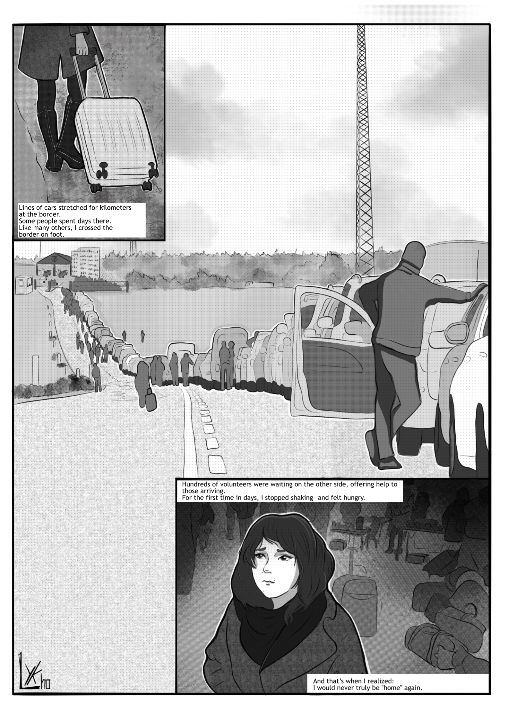
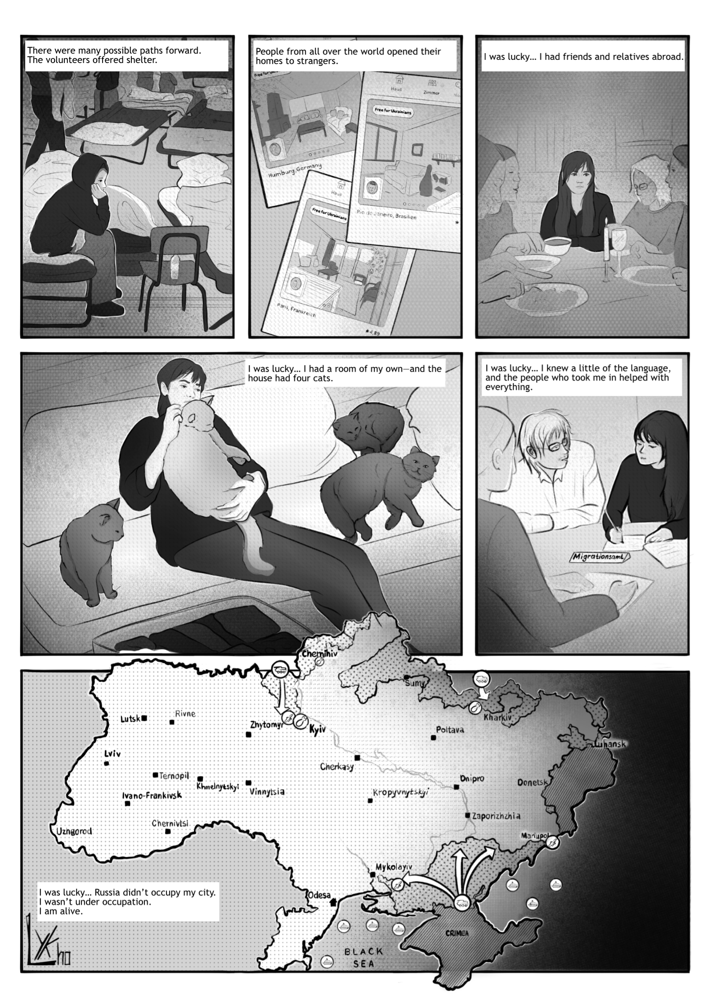
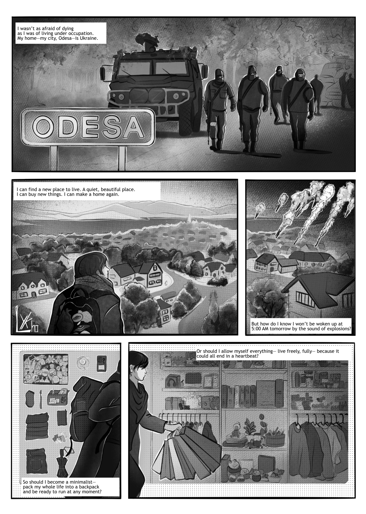
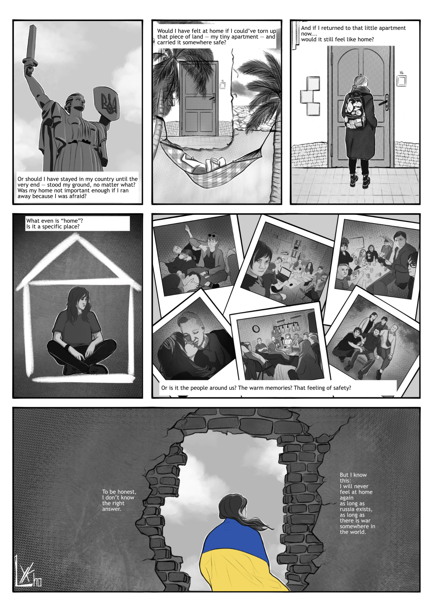

Home(less)
Dieser Comic entstand im Rahmen des Kurses „Comic erzählen und zeichnen“ während meines Studiums der Medieninformatik an der Hochschule Flensburg.
Die Geschichte thematisiert die Erfahrung der Flucht vor dem Krieg sowie die Suche nach einem neuen Zuhause und einer eigenen Identität.
Als ich die Themen „homeless“ und „restless“ hörte, wusste ich sofort, dass ich meine eigene Geschichte erzählen möchte. Zum einen, weil es wichtig ist, über das zu sprechen, was man wirklich kennt. Zum anderen, weil mich dieses Thema direkt betrifft – und ich das Gefühl hatte, dass dieser Comic einen wichtigen Beitrag leisten kann: Menschen in friedlichen Ländern zu zeigen, wie es sich anfühlt, zur Flucht gezwungen zu sein.
Ich habe persönliche Symbole sowie Verweise auf Menschen, Orte und Dinge eingebaut, die ich verloren habe, und den Comic so zu einem Raum für Erinnerung, Trauer und leisen Widerstand gemacht.




